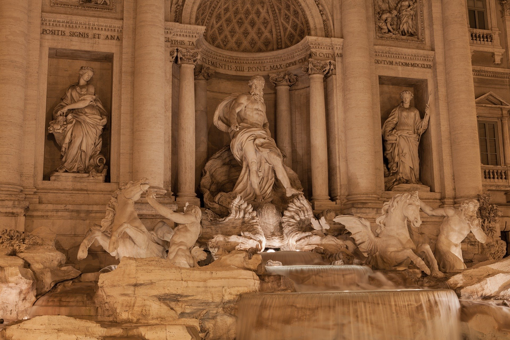

근세의 과학
머스킷의 총구에서부터 높은 하늘의 불꽃까지, 새로운 권력이 나타나고 있습니다. 새로이 인쇄된 종이에 적힌 조용한 문구도 그 속에 위대한 변화를 지니고 있습니다. 거대하고 신비롭던 세계도 더 작고 더 익숙해졌습니다. 하지만 언제나 해답을 요구하는 질문이 더 없어. 시험해 볼 믿음이 더 있으며, 새로이 형성되어야 할 민족의 정체성이 있습니다.<문명6>
- 1300년 소총과 화포 발명
- 1486년 위도, 경도 측정법 확립
- 1450년 구텐베르크, 활판 인쇄술
- 1492년 콜럼버스의 항해
- 1506년 베네치아 포술 학교 창립
- 1510년 태엽시계 발명
- 1529년 방위축성총감
- 1530년 방직기계 발명
- 1533년 레기오몬타누스, 삼각법을 천문학에서 분리
- 1540년 포신 구멍의 규격화, <화공술> 저술, <광산론> 저술
- 1541년 삼차방정식의 일반해법 발견
- 1543년 코페르니쿠스, 지동설 주장, 베살리우스의 새로운 해부학, <식물지> 발간
- 1545년 카르다노, <대수학에 관한 대기술> 발표
- 1553년 페순환원리 예측
- 1555년 <동물학> 발간
- 1557년 레코드, 수학에 등호를 도입
- 1558년 <동물지> 발간
- 1559년 메르카토르 도법 창안
- 1576년 티코브라헤의 천체관측
- 1582년 그레고리오력 반포
- 1583년 갈릴레오, 진자의 등시성 발견, 진자의 등시성 발견 (낙하의 법칙, 1589)
- 1586년 힘의 평행사변형의 법칙 발견
- 1590년 얀센, 현미경 발견
- 1596년 <본초강목> 저술
- 1600년 길버트, <자석에 대하여> 저술
- 1609년 케플러의 제1, 2법칙 발표 (제3법칙, 1619)
- 1614년 불감증산의 원리 발견
- 1620년 빛의 굴절 현상 발견 (스넬의 법칙)
- 1628년 하비, '심장과 혈액순환
- 1630년경 데카르트와 베이컨의 과학방법론 정립
- 1633년 갈릴레오 <두 가지 과학에 대한 대화>
- 1634년 배수 풍차의 능률 계산
- 1635년 페르마, <정수론> 발표
- 1637년 데카르트, <해석기하학> 발표
- 1640년 소총의 부싯돌식 발화장치 발명
- 1642년 파스칼의 계산기 발명
- 1643년 토리첼리, 대기압 측정
- 1653년 파스칼의 원리 발표
- 1654년 파스칼, 페르마 확률론을 진전시킴
- 1660년 훅의 법칙 발명, 진자시계 발명
- 1661년 개구리 허파 모세혈관, 페르마 원리, 원소의 정의
- 1662년 보일의 법칙 발견
- 1665년 훅, 세포의 발견, 미적분법 발견(뉴튼, 라이프니츠 1677년), 목성,화성, 금성의 자전관측, 빛의 회절 현상 발견
- 1666년 무지개의 이론 정립
- 1668년 레디의 구더기 실험
- 1669년 개구리 적혈구 발견
- 1675년 레벤후크, 미생물, 적혈구 발견
- 1678년 호이겐스, 빛의 파동설
- 1687년 뉴턴, 만유인력의 법칙 발표